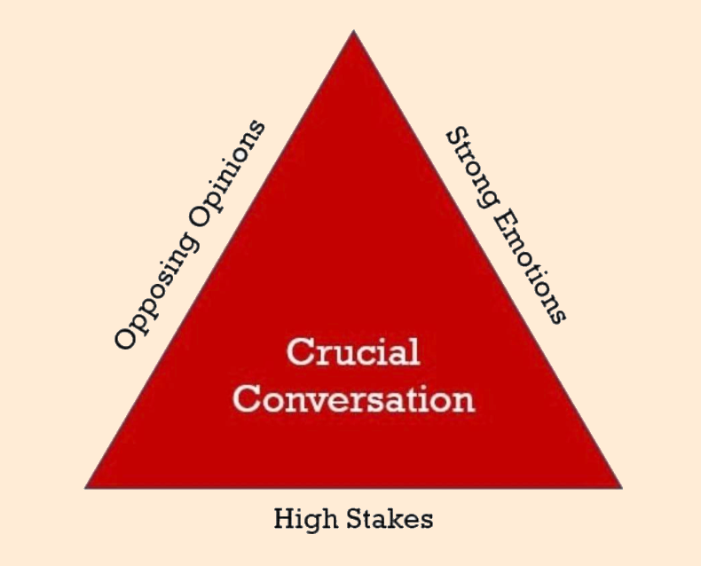
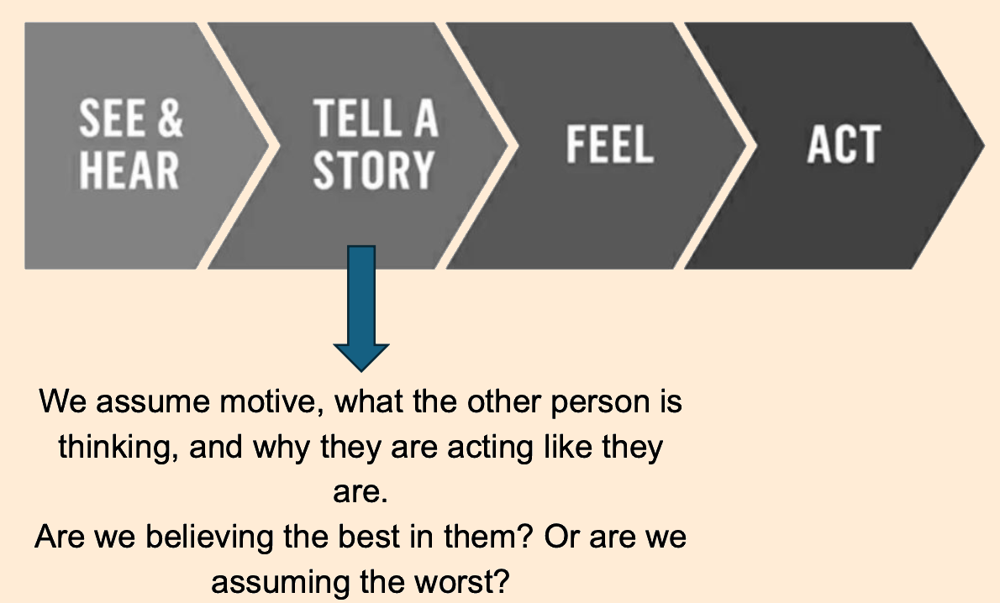

Communical Life - Crucial Accountability
Alpha Project Session #13: Berkeley Gomez
What is a crucial conversation?

There is a false dichotomy that says we can only choose one:
- We can tell the truth
- We can keep a friend
but in fact, we can tell the truth, hold others accountable to their commitments, AND strengthen the relationship.
WHAT and IF
We first need to determine:
- WHAT convo needs to happen
What actually needs to be discussed? What’s the main issue here?
- Unbundle – separate the various issues
- Content – the first time an issue comes up
- Pattern – not the first time an issue has come up
- Relationship – an issue is impacting our relationship
- The issue could also be HOW you’re communicating. Are you too direct? Not direct enough?
- Choose – ask “what do I really want?”
- Simplify – state simply what you want to discuss
- IF this convo needs to happen
Determine if this convo needs to happen:
- Am I acting out my concerns? (sarcastic, harsh, dismissive)
- Is my conscience nagging me?
- Am I choosing the certainty of silence over the risk of speaking up?
- Am I telling myself I’m helpless?
How we think communication happens
In reality, we tell ourselves stories

What story am I telling myself?
Work backwards:
- Am I acting out my concerns rather than talking them out? (act)
- What emotions are encouraging me to act this way? (feel)
- What story is creating these emotions? (tell story)
- What have I seen or heard that supports or conflicts with this story? (see/hear)
How to craft a better story
Be honest about yourself and give them the benefit of the doubt:
- What am I pretending not to notice about my role in the problem?
- Why would a reasonable, rational, and decent person do what this person is doing?
- What do I really want for me, for others, and for the relationship?
- What should I do right now to move toward what I really want?
How to have the convo
STATE your path:
- Share your facts
- Tell your story
- Ask for their path
- Talk tentatively
- Encourage testing
As you listen, remember:
- Ask (express interest in their views)
- Mirror (acknowledge their emotions)
- Paraphrase (restate what you’ve heard them say)
- Prime (if they’re holding back, take your best guess at what they’re thinking or feeling)
In my distress I called upon the Lord; to my God I cried for help. From his temple he heard my voice, and my cry to him reached his ears.
Psalm 18:6
Overall
- Start with safety (compassion, calm, respect)
- Share your path (what I perceive happened)
- End with a question: “From your perspective, what happened?”
The Lord is near to all who call on him, to all who call on him in truth.
Psalm 145:18
What does Jesus say?
*We can initiate because God initiated with us in Christ.*
but God shows his love for us in that while we were still sinners, Christ died for us.
Romans 5:8
Matthew 18 principles:
- Keep the circle small. "If your brother sins against you, go and tell him his fault between you and him alone".
- Be straightforward. "Tell him his fault."
- Be Forgiving. "If he hears you, you have gained your brother." This implies that once the matter is resolved, we should whole-heartedly forgive and restore the person whose fault has offended us.
CREDITS: Crucial Accountability - Berkeley Gomez